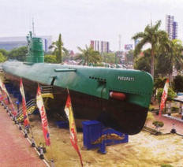
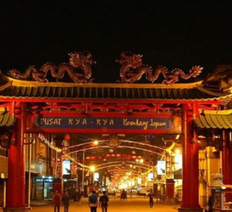
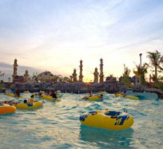
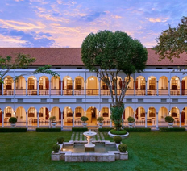

1. Monumen Kapal Selam
In Surabaya, there are monuments made from unused submarines, called Monkasel.
This monument is used by kids to learn about submarines and how it feels to be in it.

2. Chinatown (Kya-Kya Surabaya)
This part of Surabaya got its name thanks to the influx of Chinese owned restaurants
and shops in the area and you can still find a wealth of local architecture here that leads off the main
road which is called Jalan Karet.

3. Ciputra Waterpark Surabaya
If you want to cool off in Surabaya then consider a trip to the Ciputra Waterpark which is
a great spot to have fun, especially if you are travelling with children.

4. Hotel Majapahit
Majapahit Hotel is one of the most famous old landmarks in Surabaya and was built in 1910.
The hotel is built in the colonial style and is surrounded by stunning lush gardens and you can come here to drink
in the old-world atmosphere and enjoy a classic high tea which features little sandwiches, cakes, and other finger food.